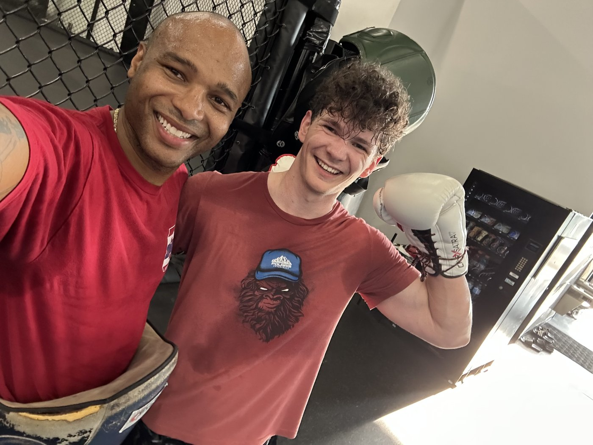
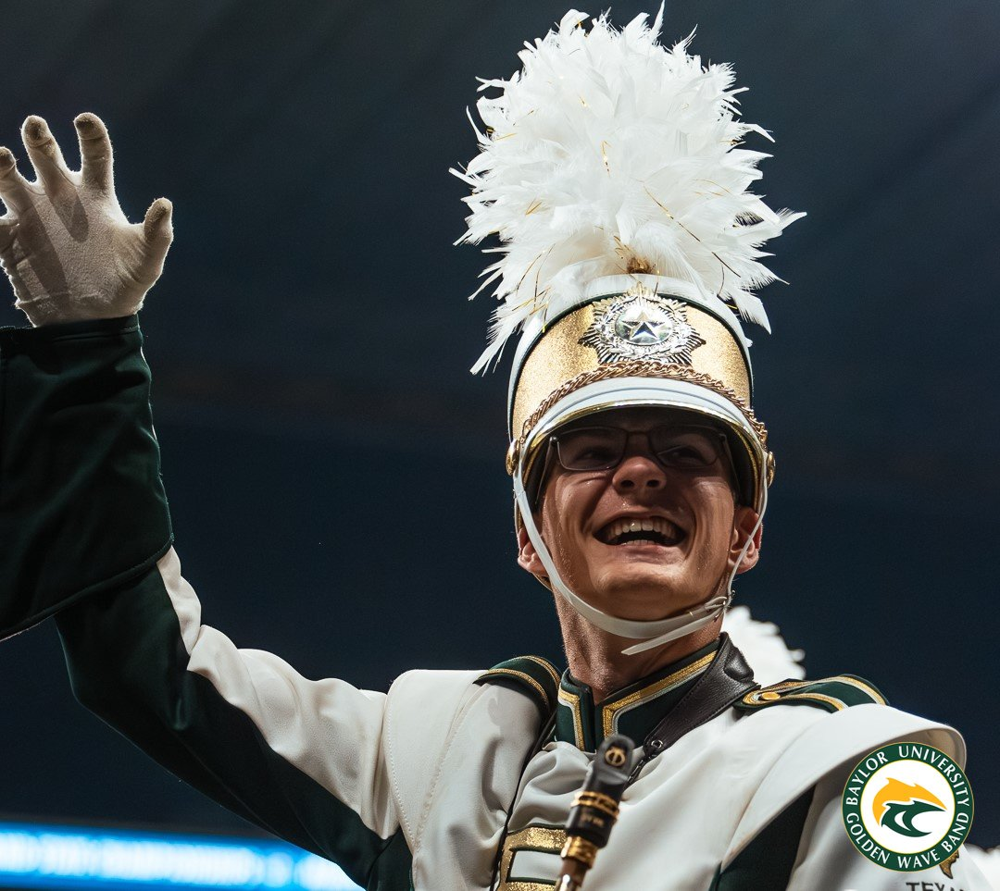

Earned Scouting's highest rank through Troop 3084 in Maple Grove, Minnesota — the culmination of six years of progressive leadership. Served as Patrol Leader and Troop Guide from 2021 to 2024, managing patrol activities, guiding new Scouts through their first year, and mentoring younger members through their advancement. Before that, worked as Den Chief for Cub Scout Pack 584 from 2018 to 2020, assisting den leadership with meetings and activities. Eagle isn't awarded for a moment — it's awarded for finishing something long, difficult, and mostly invisible, and it shows.

Trains and competes in Muay Thai, the traditional striking art of Thailand built around punches, kicks, elbows, and knees — often called "the art of eight limbs." Regular sparring, pad work, and fight-camp training make up a serious part of the week, with active competition rounding out the year. Muay Thai isn't picked up casually; it takes constant practice, an honest read of what's working and what isn't, and a willingness to keep showing up on days when nothing feels right.

Tenor and baritone saxophonist with a long history in ensemble performance — the Minnesota Youth Jazz Bands (Jazz III, Jazz II, and Super Sax across multiple years) and the Osseo Jazz Band, plus selection to the District All-Star Jazz Band in both 2023 and 2024. Also served as Drum Major at Osseo Senior High. Now on Band Council for Baylor's Golden Wave Marching Band as Freshman Representative and Spirit Chair, helping organize events for a 300+ member program. Music teaches things a classroom can't: listening before you speak, sensing what a group needs next, and trusting that the practice pays off even when nobody's watching.